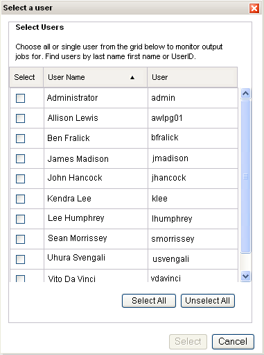

Select a user dialog box
The system launches the "Select a user" dialog box. You can select one, some, or all users. but at least one user must be selected. when you are ready, click Select to populate the User box with your selections.
